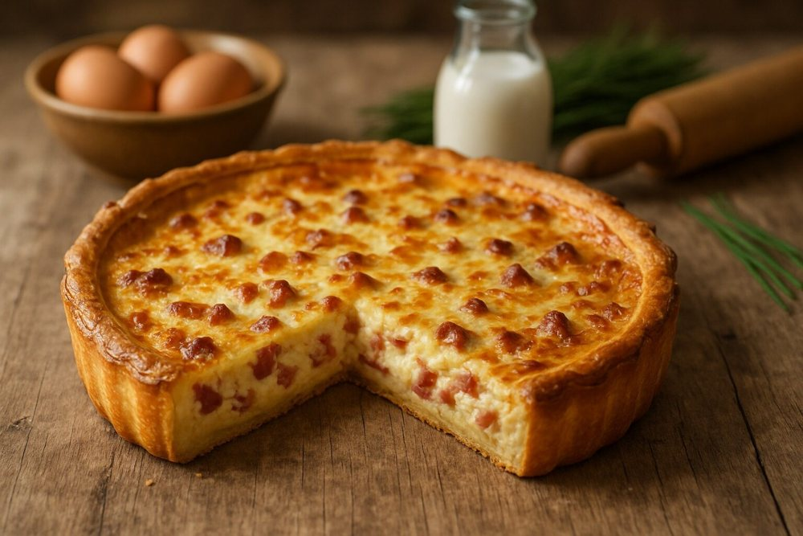

Tortas salgadas
Quiche Lorraine

Ingredientes
- 2 xícaras de farinha de trigo
- 2 colheres (sopa) de gordura vegetal gelada
- 3 colheres (sopa) de manteiga gelada
- 12 fatias de bacon
- 2 ovos
- 2 gemas
- 2 xícaras de creme de leite fresco
- Sal e pimenta-do-reino a gosto
- ½ xícara de queijo tipo suíço ralado
- ½ xícara de parmesão ralado fino
Modo de preparo
- Numa tigela, ponha a farinha de trigo, a gordura e 2 colheres (sopa) de manteiga. Misture com a ponta dos dedos, formando uma farofa grossa.
- Junte umas 3 colheres (sopa) de água à farofa. Misture rapidamente. Amasse até obter uma massa lisa, que solte das mãos e forme uma bola. Embrulhe em filme plástico e leve à geladeira por cerca de 3 horas.
- Ponha a bola de massa sobre uma superfície enfarinhada e achate-a até obter um círculo de 3 cm de espessura. Abra a massa com um rolo até obter um círculo de 3 mm de espessura.
- Unte uma fôrma de abrir de 24 cm de diâmetro, enrole a massa no rolo e desenrole-a sobre a fôrma.
- Passe o rolo pelas bordas da fôrma para cortar o excesso de massa. Fure o fundo da massa com um garfo e leve à geladeira por 1 hora.
- Leve a massa ao forno preaquecido (180 °C) por 15 minutos, até a massa dourar ligeiramente. Deixe esfriar.
- Enquanto isso, frite as fatias de bacon até ficarem sequinhas. Escorra sobre papel absorvente e deixe esfriar. Esmigalhe e reserve.
- Numa tigela, bata os ovos, as gemas e o creme de leite. Tempere e misture os queijos. Junte à mistura de ovos, mexendo bem.
- Distribua o bacon sobre a massa e espalhe a mistura preparada por cima. Espalhe a manteiga restante sobre o recheio e leve ao forno por 30 minutos até o recheio crescer e dourar. Deixe esfriar e congele.
Observação
Se não tiver queijo tipo suíço, utilize queijo prato tipo lanche. Congelamento: ponha a quiche num saco plástico que feche hermeticamente ou embrulhe em filme plástico; etiquete e congele. Descongelamento: descongele a quiche coberta com uma folha de papel-alumínio no forno baixo e aqueça; nos últimos 10 minutos, retire o papel. Não utilize o micro-ondas.